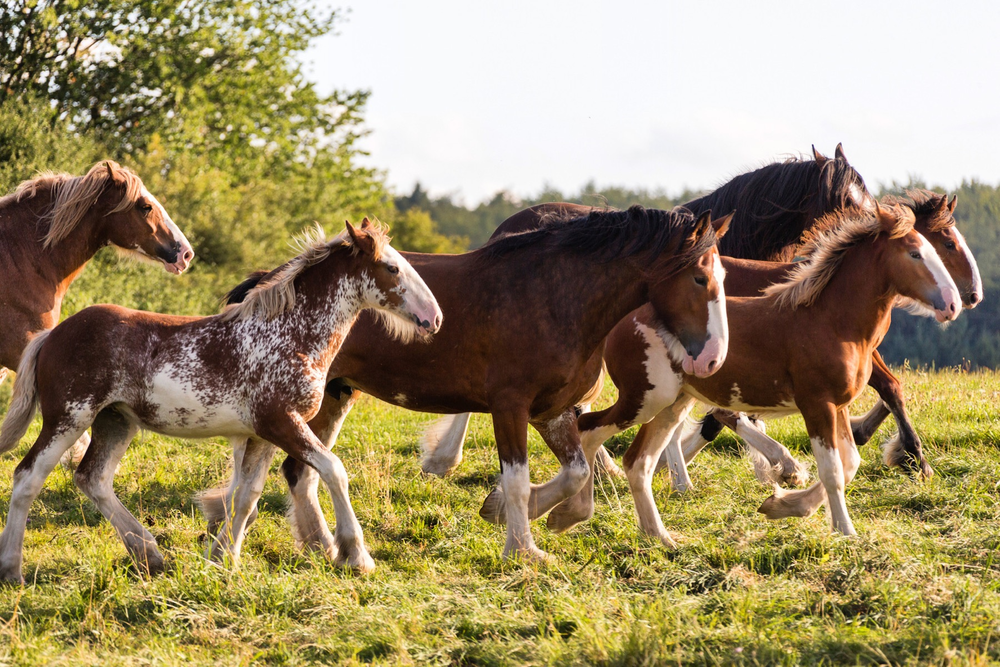
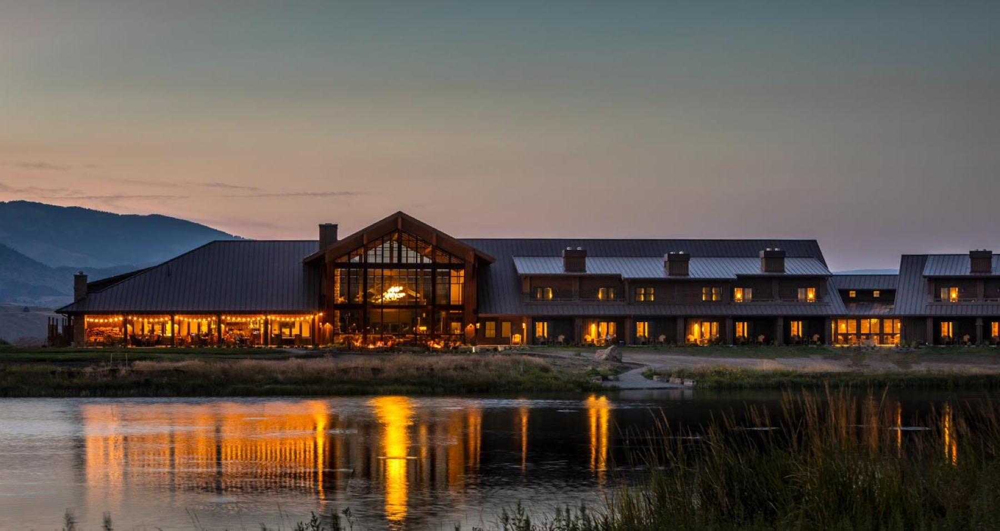
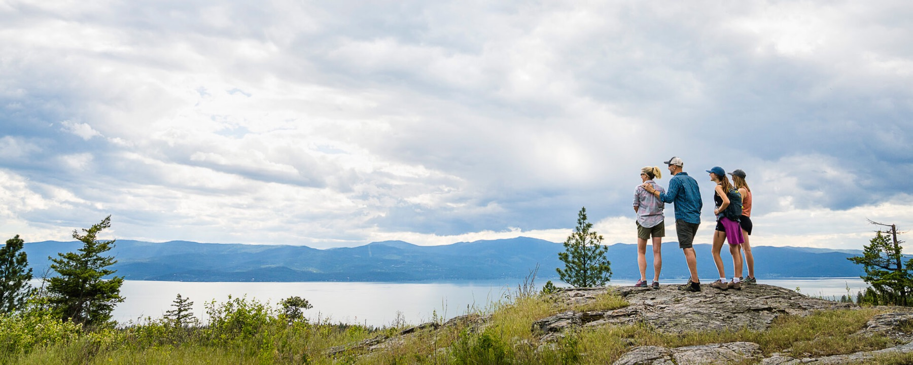

Clydesdale + 320 + Sage
Three flexible bases, three different moods, no forced weeklong ranch package.
Montana · ranch country · late summer
A photo-first comparison of eight ranches and lodges—screened for two adults and a one-year-old—plus a 13-night Glacier-to-Yellowstone trip that mixes horses, lakes, mountains, food and an actual spa day.



The fast read
Austria’s best family resorts combine farm animals, spa, full board and infant care in one rate. Montana makes you choose: authentic ranch programming, polished lodge luxury, or flexible cabin value.
Three flexible bases, three different moods, no forced weeklong ranch package.
Seven nights, meals, lake sports, horses and airport transfers—with the baby free.
Serious food, Yellowstone access and spa energy without giving up family welcome.
The most complete all-inclusive, baby-ready ranch experience in the shortlist.
The recommended shape
Fly into Kalispell (FCA), out of Bozeman (BZN). The route moves south instead of doubling back and keeps every transfer under a half day.
Settle into a two-bedroom cabin, meet the herd, then take two unhurried Glacier days.
Premium swap: Flathead Lake LodgeCabin life between Big Sky and West Yellowstone; horses and park days à la carte.
Premium swap: Lone Mountain RanchYellowstone’s north side, river views, proper dining and a restorative final chapter.
Premium swap: Mountain SkyShort Livingston/Bozeman day, a real dinner, then a low-stress BZN flight home.
13 nights totalWhere everything sits
Tap a property below or on the map. The orange line is the recommended FCA-to-BZN route; the outlying luxury ranches are comparison options, not route requirements.
The researched shortlist
Apples to apples
Price signals compare structure, not live availability. Exact published figures are called out; quote-only and booking-engine properties stay labeled as such.
| Stay | Structure | Meals | Baby reality | Farm / horses | Adult luxury | Target-date fit |
|---|
The visual check
All images are from the properties’ official websites. Each frame links back to its source stay.
My call
The Clydesdale → 320 → Sage route best preserves the Austria brief without letting a single seven-night package consume the whole trip budget. If Flathead has the Aug 30 week and the quote works, replace Whitefish’s four nights with the full week, then finish with four nights at Sage and one Bozeman night.
Best variety and most controllable spend.
Closest to an all-inclusive Austrian family-resort rhythm.
Research posture: official property information checked August 10, 2026. Rates and seasonal programming can change; September 2026 inventory must be confirmed directly. Price marks: $$ comparatively practical, $$$ upscale à la carte, $$$$ inclusive splurge, $$$$+ exceptional splurge.
Map tiles © OpenStreetMap contributors. Photography belongs to the named properties and is used here for trip-planning comparison.